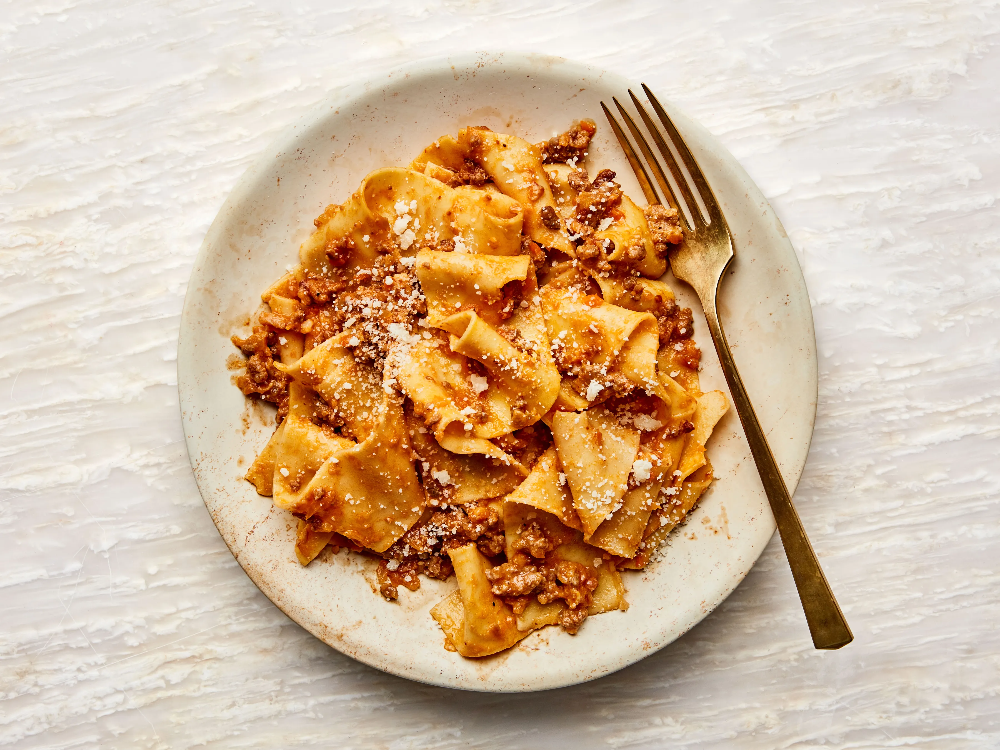

Home
Bolognese

A classic italian bolognese
A rich meat sauce originating in Bologna, a classic pairing with pasta.
Ingredients:
- 500g Beef or veal mince
- 500g Pork mince
- Soffrito (Onion, Celery, Carrot)
- Tomato puree
- Salt
- 1l Beef Stock
Steps:
- Brown both beef and veal mince
- Remove and set aside. Add soffrito to the pan and sautee
- Add 1 glass of red wine to deglaze the pan
- Add the meat back in with tomato puree and beef stock
- Reduce heat and simmer for 3 to 4 hours until an oatmeal consistency
- Serve with wide pasta such as parpadelle or rigatoni